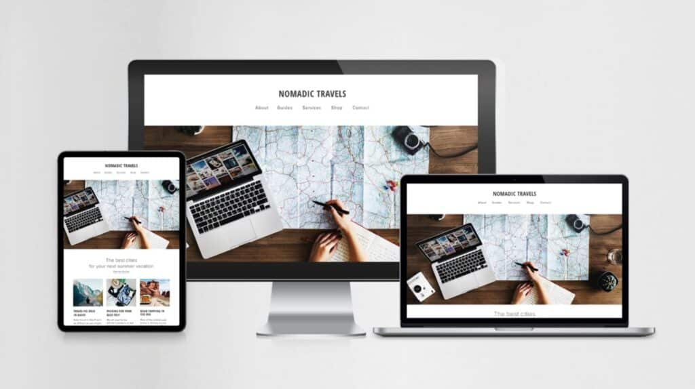
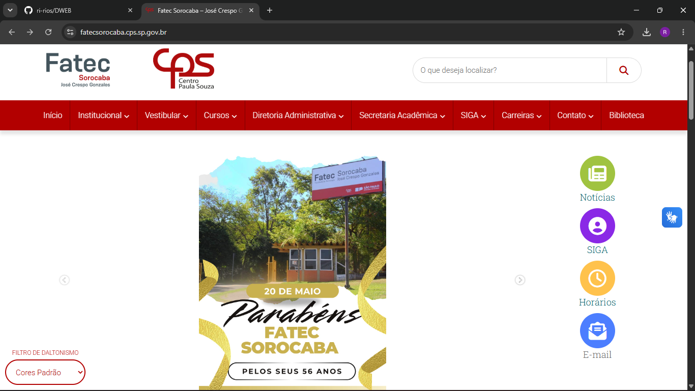

O que é responsividade
Responsividade é a capacidade de um site ou aplicativo se adaptar a diferentes dispositivos e tamanhos de tela, ajustando o layout e o conteúdo de forma automática.
Pesquisa da disciplina de Desenvolvimento Web
Fatec Sorocaba - Análise e Desenvolvimento de Sistemas
Aluno: Ricardo
Hoje as pessoas acessam sites por celular, tablet, notebook e até pela TV. Cada aparelho tem um tamanho de tela diferente, e um site feito só para o computador fica ruim no celular, com letras pequenas e itens saindo da tela. O design responsivo existe para resolver esse problema.
Segundo os dados citados nos slides da disciplina, o Brasil tem cerca de 270 milhões de linhas móveis ativas, e no mundo são mais de 8 bilhões de conexões móveis. Por isso o site precisa funcionar bem em qualquer tela.

Responsividade é a capacidade de um site ou aplicativo se adaptar a diferentes dispositivos e tamanhos de tela, ajustando o layout e o conteúdo de forma automática.
O termo foi criado por Ethan Marcotte em 2010. Ele é uma solução técnica para programar o site de forma que os elementos se adaptem sozinhos à largura da tela.
Conceito apresentado por Luke Wroblewski. A ideia é planejar o projeto primeiro para o celular e só depois para o computador, porque a tela pequena obriga a focar no que é mais importante.
Os pilares definidos por Marcotte são princípios, e não ferramentas:
Algumas técnicas usadas para deixar uma página responsiva:
O atributo alt da imagem também é importante, porque os leitores de tela usam esse texto.

Os PWAs (Progressive Web Apps) são sites que se comportam como aplicativos, e um dos critérios para ser um PWA é ser responsivo. Alguns exemplos:
Um produto responsivo é projetado de forma a oferecer uma experiência de usuário otimizada em desktops, tablets, smartphones e outros dispositivos.
O design responsivo é necessário porque as pessoas acessam a web por aparelhos muito diferentes. Ele se apoia em três pilares (layouts fluidos, imagens flexíveis e media queries) e usa ferramentas como Flexbox, Grid e HTML semântico.
A ideia de Mobile First ajuda a planejar o site começando pelo celular. Conhecer esses conceitos é importante para quem quer trabalhar com desenvolvimento web.